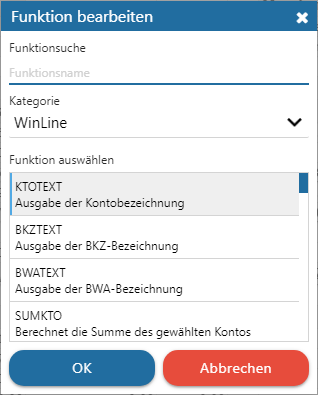
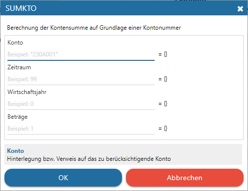

Ø Funktion bearbeiten
Durch Anwahl des Buttons "Funktion bearbeiten" in der Bearbeitungsleiste wird das Fenster "Funktion bearbeiten" geöffnet. Abhängig davon, ob sich der Fokus auf einer Zelle mit oder ohne bestehender Funktion befindet, wird eine Neuanlage oder eine Bearbeitung angeboten.
Hinweis
Weitere Information zu den Funktionen des WinCalc können den Kapiteln Standard Funktionen und WinLine Funktionen entnommen werden!
Einstellungsfenster "Funktion bearbeiten" - Neuanlage

Ø Funktionssuche
An dieser Stelle kann durch Angabe eines Suchbegriffs in allen Funktionsnamen gesucht werden. Die Tabelle der Funktionen wird dabei nach bestätigen der Eingabe aktualisiert.
Ø Kategorie
Alle Funktionen wurden Kategorien zugeteilt. Durch Auswahl einer Kategorie wird die Tabelle der Funktionen direkt aktualisiert.
Ø Tabelle "Funktionen"
In der Tabelle der Funktionen werden alle Funktionen, gemäß Funktionssuche und Kategorie-Auswahl angezeigt. Per Doppelklick oder Anwahl und Button "Ok" wird die Funktion in die Zelle eingefügt und in den Funktions-Assistenten gewechselt.
Einstellungsfenster "Funktion bearbeiten" - Funktions-Assistent

Wird eine bestehende Funktion bearbeitet oder eine neue Angelegt, so öffnet sich der Funktions-Assistent. In diesem werden alle benötigten Parameter angezeigt und jeder einzelne mit einem individuellen Beschreibungstext versehen.
Buttons
Ø Ok
Durch Anwahl des Buttons "Ok" wird die Funktion gewählt bzw. die Eingaben gespeichert.
Ø Abbrechen
Durch Anwahl des Buttons "Abbrechen" bzw. der Taste ESC wird das Fenster geschlossen und alle nicht gespeicherten Eingaben verworfen.